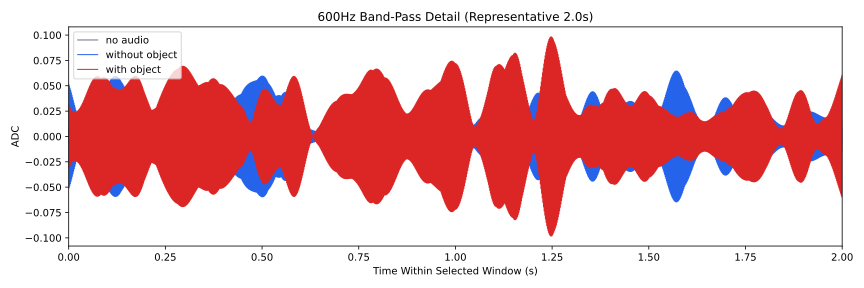
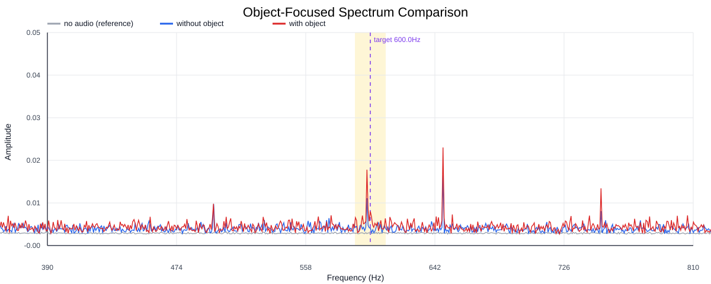
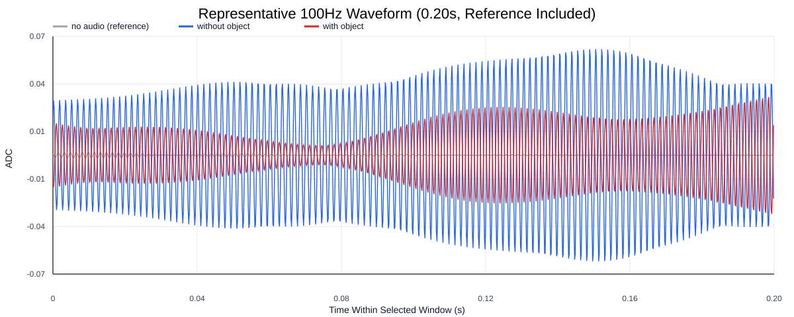
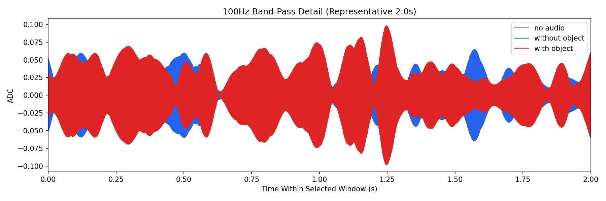
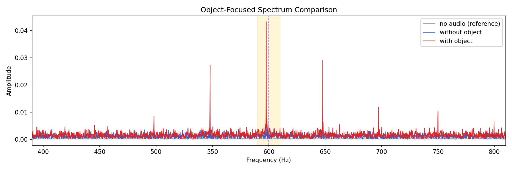
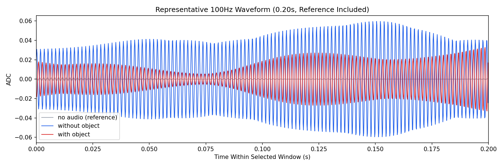

Background: F:\项目类文件夹\异物检测4.10\Data_Dual\frequency_sweep\0600Hz\repeat_05\raw\no_audio.csv
Without object: F:\项目类文件夹\异物检测4.10\Data_Dual\frequency_sweep\0600Hz\repeat_05\raw\without_object.csv
With object: F:\项目类文件夹\异物检测4.10\Data_Dual\frequency_sweep\0600Hz\repeat_05\raw\with_object.csv
| Metric | 无音频 | 100Hz无异物 | 100Hz有异物 | 无异物/无音频 | 有异物/无异物 | 有异物/无音频 |
|---|---|---|---|---|---|---|
| centered_rms | 0.025615 | 0.126099 | 0.158283 | 4.9229 | 1.2552 | 6.1793 |
| raw_target_amp | 0.000160 | 0.001343 | 0.005160 | 8.3899 | 3.8418 | 32.2321 |
| filtered_rms | 0.002241 | 0.021654 | 0.035871 | 9.6620 | 1.6566 | 16.0061 |
| filtered_target_amp | 0.000160 | 0.001343 | 0.005160 | 8.3899 | 3.8418 | 32.2321 |
| filtered_energy_ratio | 0.007655 | 0.029487 | 0.051360 | 3.8521 | 1.7418 | 6.7095 |
| window_filtered_target_amp_mean | 0.001598 | 0.026128 | 0.043890 | 16.3464 | 1.6798 | 27.4586 |
| window_filtered_target_amp_std | 0.002434 | 0.014093 | 0.022737 | 5.7893 | 1.6134 | 9.3402 |





